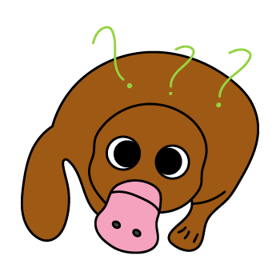
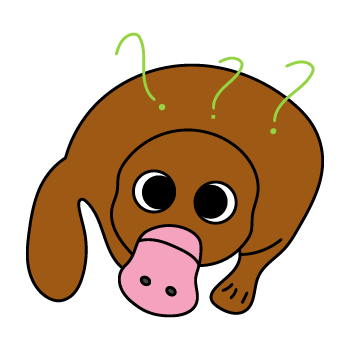

‹ORNITORINCO›
Non è una papera, non è un castoro, non è una lontra, e quindi l’ornitorinco sa solo quello che non è. Talmente confuso sulla sua identità che persino gli scienziati quando se lo sono ritrovati davanti per la prima volta non credevano ai loro occhi, a quello che stavano guardando, e lo considerarono un falso come tanti ne giravano all’epoca, fino a che non dovettero fare i conti con la realtà. L’ornitorinco esiste, ma neanche lui sa come, soprattutto visto che vive in Australia che è ormai risaputo essere la terra della morte e dove le ore di qualsiasi creatura sono contante. È un mammifero ma depone le uova, ha le zampe palmate ma anche gli artigli, ha il veleno ma anche la pelliccia idrofoba. Insomma, è tutto e niente, un po’ come il gatto di Schrödinger che è vivo e morto al tempo stesso.
Inoltre potrebbe sembrare strano, ma ricordatevi sempre che «Ha più di pura abilità, ha una coda da castoro e un conto!», quindi abbiate paura, sempre.
 
